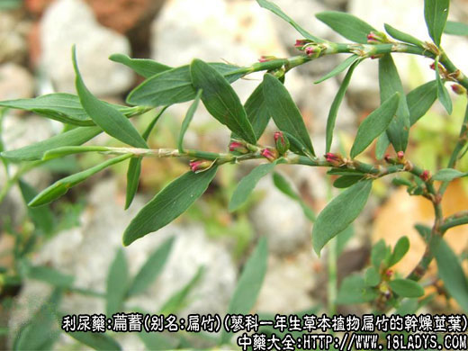
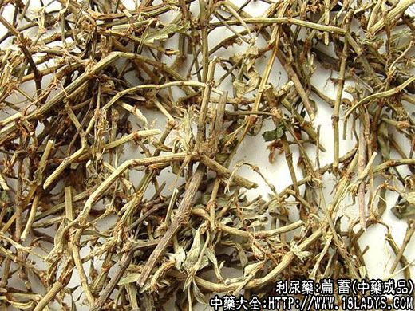
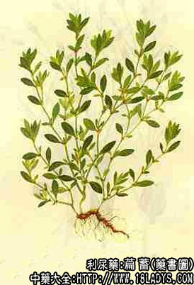

本品为少常用中药，《神农本草经》列为上品。
别名：扁竹、猪牙草、扁竹牙、扁竹、竹节草。
来源：为蓼科一年生草本植物萹蓄和异叶蓼、习见蓼的干燥茎叶，均为野生。
植物形态：萹蓄为一年生草本植物，高（或长）15～50厘米，茎平卧或斜向上伸，亦有直立，基部多分枝，具明显的节及纵沟纹。单叶互生，长椭圆形或披针形，有短柄；托叶鞘筒状抱茎而生，基部暗红褐色，先端老时裂成丝状。花簇生叶腋，花冠小，绿色，边缘粉红色。瘦果三棱形，黑色。
产地：全国大部分地区均产。
性状鉴别：茎圆柱形，直径约1～3毫米，灰绿色，节间棕红色，有细纵皱纹。叶片皱缩，呈棕绿色或灰绿色。气无味微苦。
以色绿叶多，质嫩，无杂质者为佳。
主要成分：叶含萹蓄甙、大黄素和钾盐。
药理作用：1、利尿。作用显著，且能强加尿内钠的排出。连续给药也不会产生耐受性，应用上安全范围较大，用量可稍大，过小则无利尿作用。有效成分为钾盐。2、抗菌。对福氏痢疾杆菌III型有较强的抑菌作用。3、驱虫。临床观察对驱除蛲虫等有一定作用。
炮制：切咀，生用。
性味：苦平。
归经：入膀胱经。
功能：利热湿，痛淋闭，杀虫。
主治：小便不利，淋病，水肿等症。
临床应用：1、治疗热淋、石淋（如尿道炎、尿道结石、输尿管结石等），尤其适宜于有小便涩痛兼有大便秘结者，配木通、瞿麦、车前子等，方如八正散。
3、治疗蛲虫病，单用萹蓄30g，水煎，早、晚各服一次；或配榧子肉、尖槟等，如萹榧驱蛲汤。
使用注意：瞿麦、萆薢、萹蓄都能去湿热利小便而治淋症。但三者的适应症各有重点。凡热重于湿，小便时尿道有灼热感和疼痛者用瞿麦；如湿重于热，小便如米汤样，则宜用萆薢；如湿热相当，小便一般滞涩不畅者用萹蓄，遇有兼证时，三者可彼此配伍同用。
用量：9~18g，单味使用至30g。
处方举例：1、八正散《局方》：萹蓄9g、木通6g、瞿麦9g、栀子9g、滑石12g、车前子9g（包煎）、大黄3g（后下），甘草梢6g、灯心草3g，水煎服。
2、乳糜尿方：萹蓄18g、石苇15g、川萆薢30g、槐花米12g、十大功劳叶30g，水煎服。
注：1、蓼属中的萹蓄组植物异叶蓼及习见蓼等其生药外形与萹蓄极相似，均与萹蓄通用。
2、广东、广西所用萹蓄，系鸢尾科植物射干的根茎。其性状效用，均与蓼科萹蓄不同，注意区分。
3、福建北部及东部所用萹蓄系都可植物鸡眼草和长萼鸡眼草的全草，称小萹蓄。